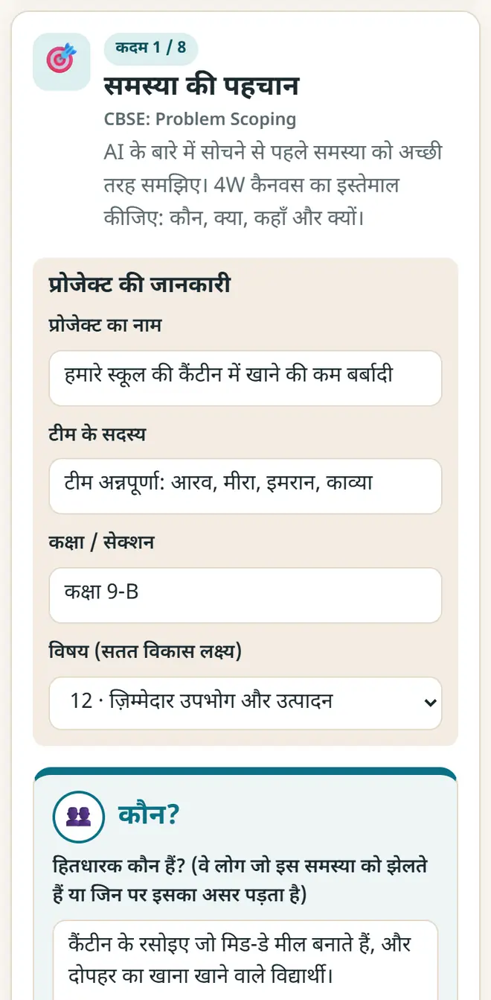
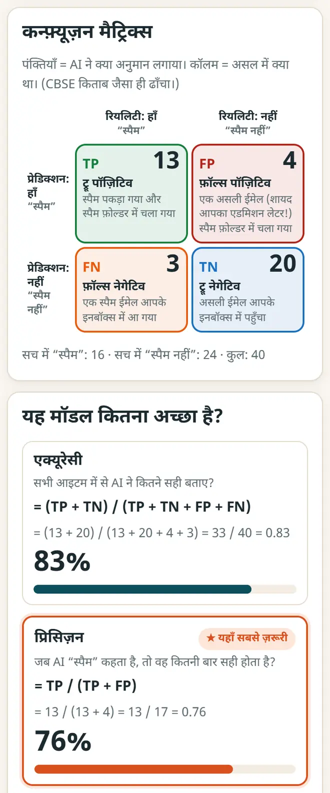

CBSE कक्षा 10 AI प्रोजेक्ट (विषय 417): स्टेप-बाय-स्टेप गाइड
प्रोजेक्ट के 10 अंक हैं, और उसके वाइवा के 5 अंक अलग। आइडिया कैसे चुनें, AI प्रोजेक्ट साइकिल से योजना कैसे बनाएँ और उसे कैसे प्रस्तुत करें, यहाँ देखिए; स्कूल की लैब या फ़ोन पर चलने वाले मुफ़्त ऐप के साथ।
छोटा जवाब
2026-27 के CBSE कक्षा 10 AI (417) सिलेबस में प्रैक्टिकल 50 अंकों का है: प्रैक्टिकल फ़ाइल 15, प्रैक्टिकल परीक्षा 15, वाइवा 5, प्रोजेक्ट (या फ़ील्ड विज़िट या पोर्टफ़ोलियो) 10 और प्रोजेक्ट वाइवा 5। किसी सतत विकास लक्ष्य (SDG) से जुड़ी असली समस्या चुनें, AI प्रोजेक्ट साइकिल कैनवस में हर चरण की योजना बनाएँ, एक छोटा मॉडल बनाएँ और बताएँ कि आपने उसे कैसे जाँचा।
6 स्टेप में अपने AI प्रोजेक्ट की योजना बनाएँ
-
असली समस्या और एक SDG चुनें
अपने आस-पास दिखने वाली समस्या चुनें: कैंटीन में खाने की बर्बादी, सड़क के गड्ढे, पानी की कमी, फ़सल की बीमारी या परीक्षा का तनाव। CBSE के कहे अनुसार उसे 17 सतत विकास लक्ष्यों में से किसी एक से जोड़ें।
-
4W से समस्या को समझें
AI प्रोजेक्ट साइकिल कैनवस खोलें और नया प्रोजेक्ट शुरू करें, या पहले कोई नमूना देखें। जवाब लिखें: समस्या किसकी है (Who), क्या है (What), कहाँ होती है (Where) और क्यों ज़रूरी है (Why); फिर अपना प्रॉब्लम स्टेटमेंट लिखें।

AI प्रोजेक्ट साइकिल कैनवस: एक नमूना प्रोजेक्ट के 4W। -
डेटा की योजना बनाएँ
लिखें कि कौन-सा डेटा चाहिए, वह कहाँ से आएगा (सर्वे, फ़ोटो, सेंसर या कोई सार्वजनिक डेटासेट) और आप उसे प्राइवेट कैसे रखेंगे। डेटा एक्सप्लोरेशन में उसका एक आसान चार्ट बनाएँ।
-
एक छोटा मॉडल बनाएँ
AI का क्षेत्र चुनें: स्टैटिस्टिकल डेटा (टेबल), कंप्यूटर विज़न (फ़ोटो) या NLP (टेक्स्ट)। मुफ़्त ऐप से आज़माएँ: फ़ोटो के लिए कंप्यूटर को सिखाएँ (इमेज AI), टेक्स्ट के लिए मूड पहचानने वाला AI सिखाएँ या कोड के लिए Python प्लेग्राउंड। CBSE के अपने नमूना प्रोजेक्ट हैं: पेंगुइन की प्रजाति का अनुमान, कोरल ब्लीचिंग की जल्दी पहचान और सेंटिमेंट एनालिसिस।
-
ईमानदारी से जाँचें
मॉडल को ऐसे डेटा पर टेस्ट करें जो उसने पहले नहीं देखा। मेरा AI कितना अच्छा? (मूल्यांकन) में कन्फ़्यूज़न मैट्रिक्स भरें और एक्यूरेसी, प्रिसिज़न, रिकॉल और F1 देखें। लिखें कि मॉडल कहाँ और क्यों ग़लत होता है।

मॉडल की जाँच: कन्फ़्यूज़न मैट्रिक्स, एक्यूरेसी, प्रिसिज़न और रिकॉल। -
नैतिकता जाँचें और कैनवस प्रिंट करें
प्राइवेसी, निष्पक्षता और सुरक्षा के नैतिक सवालों के जवाब दें, फिर पूरा कैनवस खोलकर प्रोजेक्ट फ़ाइल के लिए प्रिंट करें। वाइवा के लिए दो मिनट में समझाने का अभ्यास करें।
SDG के साथ कक्षा 10 AI प्रोजेक्ट के आइडिया
- स्टैटिस्टिकल डेटा: काल्पनिक हाज़िरी और टेस्ट के अंकों से अनुमान लगाएँ कि किन विद्यार्थियों को अतिरिक्त मदद चाहिए (SDG 4, गुणवत्तापूर्ण शिक्षा)।
- कंप्यूटर विज़न: कचरे की फ़ोटो को गीला और सूखा में छाँटें (SDG 12, ज़िम्मेदार उपभोग और उत्पादन)।
- कंप्यूटर विज़न: फ़सल की फ़ोटो में पत्तों की बीमारी पहचानें (SDG 2, भुखमरी ख़त्म करना)।
- NLP: फ़ीडबैक फ़ॉर्म में ख़ुश, दुखी या नाराज़ टिप्पणियाँ पहचानें (SDG 3, अच्छा स्वास्थ्य और कल्याण)।
- NLP: स्कूल का हेल्प चैटबॉट, जो समय और कार्यक्रमों के सवालों के जवाब दे (SDG 4, गुणवत्तापूर्ण शिक्षा)।
नए मुफ़्त टूल और हिंदी में AI के पाठ पाएँ
हमारी ईमेल लिस्ट से जुड़ें: नए मुफ़्त ऐप, नई गाइड और AI पर हिंदी वीडियो पाठ की जानकारी आपको मिलती रहेगी। कोई स्पैम नहीं।
सिर्फ़ वयस्कों (18+) के लिए। आप कभी भी नाम हटवा सकते हैं।
हम ये टूल क्यों सुझाते हैं
- सबके लिए मुफ़्त: न विज्ञापन, न साइन-अप, न कोई पेड प्लान।
- प्राइवेट: आपकी फ़ाइलें और जानकारी आपके अपने डिवाइस पर ही रहती हैं।
- फ़ोन, लैपटॉप या स्मार्टबोर्ड पर चलते हैं, और एक बार खुलने के बाद बिना इंटरनेट भी।
- हिंदी समेत 12 भाषाओं में।
वीडियो से सीखना पसंद है? हमारे YouTube चैनल पर AI और मुफ़्त टूल्स के हिंदी पाठ देखें।
अक्सर पूछे जाने वाले सवाल
कक्षा 10 AI प्रोजेक्ट कितने अंकों का है?
2026-27 के सिलेबस में प्रोजेक्ट वर्क / फ़ील्ड विज़िट / स्टूडेंट पोर्टफ़ोलियो (कोई एक) के 10 अंक और उसके वाइवा के 5 अंक हैं, जो 50 प्रैक्टिकल अंकों का हिस्सा हैं। नया सिलेबस हमेशा cbseacademic.nic.in पर देख लें।
प्रोजेक्ट फ़ाइल में क्या-क्या होना चाहिए?
अच्छी प्रोजेक्ट फ़ाइल में आमतौर पर शीर्षक और SDG, 4W प्रॉब्लम कैनवस, डेटा के स्रोत, डेटा का चार्ट, आपका बनाया मॉडल, उसे कैसे जाँचा (एक्यूरेसी या कन्फ़्यूज़न मैट्रिक्स), नैतिकता की जाँच और आगे क्या सुधारेंगे, यह सब होता है।
क्या प्रोजेक्ट के लिए कोडिंग ज़रूरी है?
हमेशा नहीं। यूनिट 4 में Orange जैसे नो-कोड टूल हैं, और फ़ोटो या टेक्स्ट के मॉडल बिना कोड भी ट्रेन हो जाते हैं। प्रैक्टिकल फ़ाइल के लिए Python काम आता है, जिसमें कम से कम 15 प्रोग्राम चाहिए।
क्या प्रैक्टिकल फ़ाइल और प्रोजेक्ट एक ही हैं?
नहीं। प्रैक्टिकल फ़ाइल (15 अंक) में कम से कम 15 प्रोग्राम होते हैं, जैसे लिस्ट जोड़ना, NumPy से माध्य, माध्यिका और बहुलक, चार्ट, और CSV फ़ाइल या इमेज पढ़ना। प्रोजेक्ट (10 अंक) एक असली समस्या हल करता है।
क्या यह CBSE का आधिकारिक संसाधन है?
नहीं। यह 2026-27 के CBSE पाठ्यक्रम पर आधारित एक स्वतंत्र, मुफ़्त गाइड है। अंतिम बात आपके शिक्षक और आधिकारिक सिलेबस की है।
काम की लगी?
इसे किसी दोस्त, साथियों या अपने स्कूल के WhatsApp ग्रुप में भेजें।